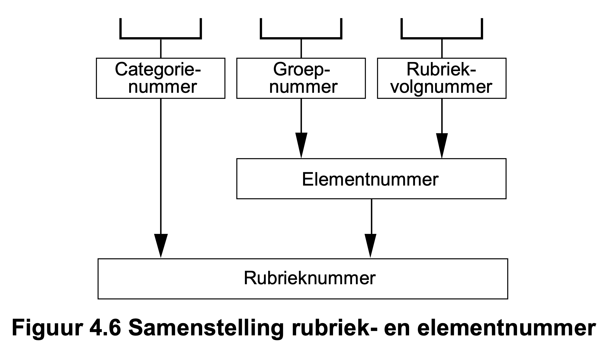
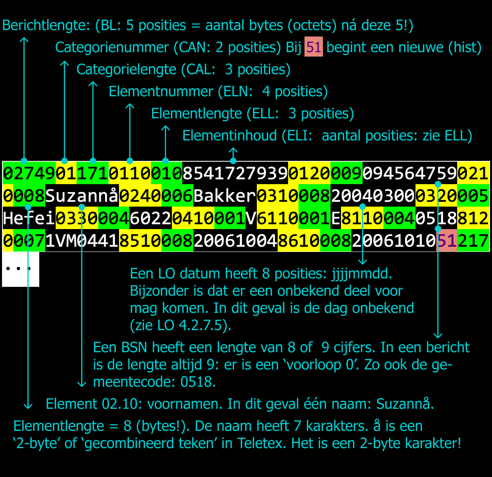
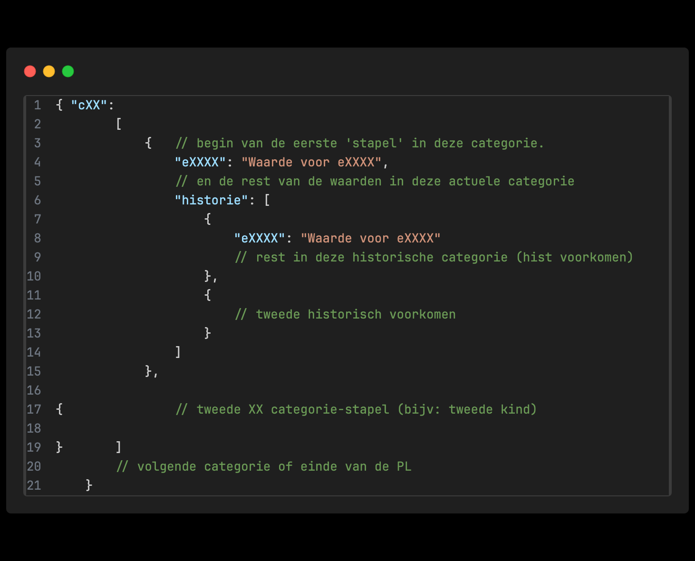

Persoonslijst (PL) in JSON
Onderstaande PL kun je bewerken. De waarden in de rechterkolom en de uitleg veranderen dan mee na het klikken op 'update PL'.
In de meeste gevallen zit een PL, of een deel daarvan, in een bericht. De vorm van een bericht wordt op een andere plaats beschreven. Lees in de rechterkolom over de ontwerpbeslissingen.
en als object
Hieronder staat dezelfde PL nadat het eerst een Javascript object werd en daarna weer tekst.
Een categorie als key komt altijd 1 keer voor. Een categorie is altijd een array. Elke "stapel" is een element in deze array. In een stapel is de historie weer een array. De historie zit in het element 'historie'.
Achtergrond en motivatie
De voornamen van deze persoon zijn: c01[0].e0210
Categorieën 1 of meer keer aanwezig op deze PL: Object.keys in de root
Het aantal kinderen bij deze persoon: c09.length
De naam van het tweede kind: c09[1].e0210
Het aantal stapels in categorie 12 is: c12.length
Aanschrijfnaam ;-) Afgeleid van c01.e0210, c01.e0240 en c01.e0410
Uitgangspunten
De volgende uitgangspunten zijn gebruikt bij dit ontwerp:
-
Blijf zo dicht mogelijk bij wat in het logisch ontwerp BRP staat. Hierbij gaat het met name om:
- De Berichtcycli,
- De Berichtsoorten,
- De berichtopbouw,
- De beschrijving van de PL inhoud (categorieën, elementen),
- De toegestane karakters (tekst, diakrieten etcetera).
- 100% backward-compatibiliteit: conversie oud <-> nieuw is eenvoudig. Met name door het punt hierboven.
- 100% JSON en UTF-8.
Als extra voor deze variant is opgenomen:
- Historie is expliciet (als blok) opgenomen in JSON.
Huidige opbouw van PL data in LO3 berichten
Een persoonslijst (PL) bestaat uit categorieën met daarin elementen. Een elementnummer bestaat uit een groepnummer en rubriekvolgnummer. Onderstaande afbeelding komt uit het Logisch Ontwerp (LO) BRP:
In een aantal berichten dat tussen BRP-systemen wordt verstuurd zitten PL-gegevens: een hele PL of een deel daarvan. De opbouw van berichten wordt in detail beschreven in het LO BRP.
Zenders van berichten moeten berichten opmaken om te verzenden en ontvangers moeten berichten lezen en interpreteren. Veel op de BRP aangesloten partijen zijn zowel zender als ontvanger.
Een voorbeeld van een bericht met PL-gegevens is een Lg01. De gehele opbouw wordt beschreven in het LO (2024 Q1: paragraaf 5.1.7.2). Voor ons doeleinde is een deel van de inhoud bekijken voldoende: 
Voor een ontwerp in een andere vorm met de hierboven genoemde uitgangspunten is belangrijk dat in de huidge (bovenstaande) situatie:
- Er een indeling in categorieën met daarin elementen is. Elementen zijn niet opgedeeld in groepen en rubrieken, Er zijn dus categorieën met elementen: geen verdere nesting.
- Een historische categorie heeft het categorienummer van de actuele +50 (in het voorbeeld hierboven 51). Die '51' kan vervolgens meerdere keren voor komen (bij langere historie).
- Er is altijd een actuele categorie aanwezig vóór de eerste historische categorie (het is in de gekozen opzet echter mogelijk alleen historie te leveren!);
- Als een categorie historie mag hebben, moeten de historische categorieën in de juiste volgorde voor komen in het bericht: de meest recente eerst;
- Elementen zoals BSN of gemeentecode hebben een vaste lengte. In het voorbeeld heeft het BSN een 'voorloop nul'. Deze 'nummers' zijn hiermee meer een string(representatie) dan een getal. Dit is overal in de PL het geval. Een geheel onbekende datum is bijvoorbeeld 00000000.
- In de bestaande berichten wordt Teletex gebruikt als text-encoding.
- In het bovenstaande bericht is de lengte van alle elementen aangegeven in bytes. Dat is vaak gelijk aan de lengte in tekens. Als speciale karakters voor komen kan de lengte gaan afwijken van het aantal tekens omdat Teletex dan niet één maar twee bytes gebruikt om het teken aan te duiden. Dit is bijvoorbeeld het geval bij alle diakrieten.
Omdat de PL zoals hierboven weergegeven niet gemakkelijk te lezen is, is er een voor mensen iets gemakkelijker leesbare versie bedacht. Deze versie wordt ook wel 'mooi' genoemd. Binnen RvIG is tooling aanwezig die converteert tussen 'lelijk' en 'mooi'. Het 'origineel' is 'lelijk'. Dit komt ongeveer overeen met de mooi en lelijk variant van de PL in het JSON-voorbeeld links.
Ontwerp
- Op het hoogste niveau is het object dat alle categorieën bevat
- Elke categorie wordt aangeduid met cXX (bijv c01)
- Elk element wordt aangeduid met eXXXX (bijv e0110)
-
Elke categorie, ook die 1 keer voor mogen komen hebben de opbouw:

Een PL zonder historie bevat het element 'historie' niet.
Een conversie van een LO3 PL (mooi of lelijk) in dit formaat is relatief eenvoudig. Ook een terugconversie is betrekkelijk eenvoudig. (let op! eenvoudig is hier relatief: je hebt bijvoorbeeld altijd te maken met Teletex-conversie)
Onderbouwing
- Wanneer we overgaan naar een formaat als JSON is het aangeven van lengten niet nodig.
- Een PL is een object met daarin categorieën.
-
Categorieën behouden het nummer zoals nu gesteld in het LO en
krijgen de prefix 'c' (cXX), bijvoorbeeld c09 voor categorie 9
(kind). De naam van de categorie is een 'key'. Door de prefix is
het gemakkelijk te zien dat het gaat om een categorie. Verder
zit er aan die naamgeving nog een aantal voordelen:
- Een key is in JSON altijd een string. Alleen een getal gebruiken in een key, ook al is het een string, kán leiden tot problemen.
- Keys in een object hebben geen specifieke volgorde. Dit is zowel een voordeel als nadeel. De nummer-volgorde waarop ze in het logisch ontwerp staan, is een voor de lezer logische/begrijpelijke volgorde. Door de nummers in de keys te verwerken, is bij een afwijkende volgorde door alfabetisch sorteren de gewenste volgorde gemakkelijk terug te krijgen.
- Een aantal categorieën, zoals kind, mag meerdere keren voor komen. In het LO worden dit 'stapels' genoemd. Binnen een stapel is er één actuele categorie en 0 of meer historische categorieën. Er is voor gekozen elke categorie (bijvoorbeeld c09) één keer te noemen. De stapels vormen een array. Elke categorie is zo een verzameling van één of meer stapels. Omwille van de eenvoud is dit ook zo voor categorieen die één keer voor mogen komen (categorie met één stapel). Het JSON schema dwingt in dit geval af dat er slechts één stapel voor mag komen.
- Elementen worden niet verder opgedeeld en krijgen voorvoegsel "e".
- Vanwege de eenvoud is met opzet gekozen om alle waarden van elementen als tekst/string op te nemen: alle gegevens op de PL staan tussen quotes "...". Dit komt overeen met hoe de gegevens in de LO-berichten op dit moment worden getransporteerd. Dit voorkomt
- Er is voor gekozen het LO-datumformaat intact te laten. Omdat onbekende data voor mogen komen, moet elke implementatie/weergave van een datum door de software bekeken worden. Dit is in een andere constructie dan bijvoorbeeld 20220700 niet gemakkelijker. Daarom is gekozen voor deze al in het LO beschreven opzet.
Net als in het oude formaat worden categorieën genoemd en zijn groepnummer en rubriekvolgnummer samengevoegd tot elementnummer
Aandachtspunten
Positief
- JSON met UTF-8 heeft veel voordelen: het is leesbaar en wordt herkent als JSON door veel standaard tooling zoals teksteditors en programmeer-omgevingen. Het aanmaken of bewerken van een PL is eenvoudig. Zowel met de hand als met programmatuur. Deze POC gebruikt JavaScript. De code voor het ophalen van bijvoorbeeld de voornamen is eenvoudig.
- Door het toevoegen van een JSON schema kan de inhoud van een PL op een standaard wijze worden gecontroleerd.
- Ook databases, zoek-tooling etcetera herkennen JSON. Het is op dit moment het meest universeel ondersteunde formaat voor gegevensoverdracht (naast CSV en XML).
LO én JSON
De huidige opzet in JSON lijkt sterk op die van de LO-PLen. Dit betekent dat ook een aantal issues bekend van het huidige formaat ook geldt voor de JSON opzet:
- De aanduiding van de gegevens als genummerde categorieën en elementen is voor niet ingewijden lastiger. Er zijn ook voordelen. Verschillende gegevens zijn in de loop der jaren van naam veranderd. Dit heeft op de nummering geen impact. Dit had wel gevolgen kunnen hebben als gebruik gemaakt was van een aanduiding in tekst. Zo is in het verleden 'verlies Nederlanderschap' gewijzigd in 'Beëindigen nationaliteit' en is begin 2022 het woord 'predikaat' gewijzigd in 'predicaat'. Dit zijn 'breaking changes' voor een JSON formaat waarin deze namen worden gebruikt.
- Gebruik van tekstuele namen geeft een ontwikkelaar met minder domeinkennis een voordeel, bijvoorbeeld bij het genereren van code uit een API definitie. De namen van de velden kunnen echter (nog steeds) niet gebruikt worden als labels wanneer de gegevens worden gepresenteerd aan eindgebruikers. Voor zowel nummering als tekstuele labels is het nodig om voor eindgebruikers een vertaling te maken naar de volledige benamingen van de gegevens. Een JSON schema kan hier helpen.
- De verschillende stapels hebben geen ID (veld). Stel dat er een drieling is, waarvan er één van naam verandert: wat is dan het kind met de nieuwe naam? Helemaal als de gemeente ook iets in bijvoorbeeld de volgorde van stapels wijzigt, moet de software proberen te bepalen wat de juiste wijziging is. Als elke categorie (stapel) een eigen unieke ID had, dan was het bepalen van wat gewijzigd is eenvoudiger. Er is voor gekozen dit niet te doen, vanwege de eenvoud bij het opstellen van de berichten.
- Dit geldt ook voor de historie binnen een categorie (stapel). Als de volgorde van historische categorieën verschilt tussen twee versies van een PL, dan moet de software analyseren wat er aan de hand is (of de PL afkeuren).
- In de variant hiernaast heeft elke categorie dezelfde opbouw. En altijd is er de mogelijkheid tot meer voorkomens van een categorie. Het afvangen van het onterecht toevoegen van voorkomens of historie is aan de software, of aan een JSON schema waarop gecontroleerd kan worden.
En ook nog:
- Als de text-encoding UTF-8 wordt, moet ook bepaald worden of de toegestane karakters wel hetzelfde blijven als nu. Wat doen we bij niet-toegestane karakters: hetzelfde als nu? De toegestane karakters blijven bij introductie van de nieuwe voorziening gelijk aan wat in het logisch ontwerp beschreven is. Toekomstige uitbreiding is altijd mogelijk. UTF-8 beidt natuurlijk een rijke set.
- Het JSON formaat is vrij compact, maar wel iets groter dan de PL zoals beschreven in het LO. Het scheelt zo'n 20% waarschijnlijk. Gecomprimeerd verstuurd over het netwerk wordt dit verschil kleiner.
Issues
De onderstaande issues zijn niet 'blokkerend', maar waard om genoemd te worden. In een aantal gevallen worden oplossingsrichtingen genoemd.
-
In het voorbeeld links wordt een nieuw element, e0213, aan
categorie c01 toegevoegd in de programmatuur. In JavaScript
verschijnt het nu standaard als laatste key-value paar in het
object. Volgorde van key-value paren is nooit gegarandeerd (zie volgende punt).
In de gekozen oplossing zijn zowel de categorieën (cXX) als de elementen (eXXXX) 'name-value pairs' in een object. Deze zijn in JSON per definitie niet geordend. Als volgorde van belang is, is het vrij simpel om de ordening terug te krijgen: alfabetisch sorteren zet de categorieën en elementen op de juiste volgorde. Het is een mogelijkheid te eisen van alle programmatuur die berichten opstelt, de elementen in de juiste volgorde te plaatsen. Dit eisen van programmatuur die berichten interpreteert lijkt een stap te ver: JSON vereist geen specifieke volgorde van key-value paren. - In de oude vorm krijgt een historische categorie een nummer: het actuele categorienummer + 50. In de JSON opzet zijn de historische categorieën gegroepeerd onder 'historie'. Een eerste historische categorie heeft index [0] onder 'historie'. Een categorie zónder actueel voorkomen is in de oude situatie in principe mogelijk. Ook in het nieuwe formaat is dit in theorie weer mogelijk.
-
Nota-bene: in een vorige variant was de historie anders opgelost: met een geneste array. Het punt hieronder gaat niet op voor de PL zoals in dit voorstel beschreven, maar de strekking is gelijk: Geef de historie apart weer.
Mocht het vorige punt een probleem zijn, dan zijn er verschillende oplossingsrichtingen mogelijk. Eén daarvan is het scheiden van de historie van de actuele gegevens. Bijvoorbeeld:{ "actueel": {"cXX": []}, "historie": {"cXX": [[]]} }In het voorbeeld hiernaast wordt deze opbouw gebruikt. Belangrijk aandachtspunt is dat goed/gemakkelijk te herleiden valt welke gegevens bij elkaar horen. Zie hieronder een visualisatie-voorbeeld met expliciete historie (visualisatie van de PL hier links) en de 'geneste array' variant: -
Waar de volgorde van de zaken in een object (de categorieën en
elementen) niet vast staat, is dat wél zo voor de zaken in de
arrays: de verschillende 'stapels' (meerdere categorieën met
hetzelfde nummer, zoals kinderen) en de 'voorkomens' (actueel en
historisch). In alles wat je doet met de PL-gegevens moet deze
volgorde intact blijven. Er is niets dat, mocht je de volgorde
wijzigen, er op wijst wat de originele volgorde was.
- Dit is niet anders dan de huidige situatie. Het is echter denkbaar dat je iets wil doen om aan te geven tot welke stapel een gegeven behoord, of welke plaats in de historie een voorkomen heeft.
- Er is geen heel snelle manier om de inhoud van twee versies van dezelfde PL te vergelijken. Neem bijvoorbeeld een actuele categorie 1. We zullen alle gegevens in die categorie met elkaar moeten vergelijken om te kunnen concluderen dat niets gewijzigd is. Wil je dit gemakkelijker kunnen concluderen, dan zou je bijvoorbeeld een checksum mee kunnen geven (zie ook onder LO én JSON).
Maar waarom niet ...
Waarom niet alleen nummers voor de categorieën en elementen?
Een categorie begint nu met een c (c01) en een element met e (e0110). Zonder die letters is toch duidelijk al? Een categorie is twee cijfers, een elementnummer heeft er 4. De belangrijkste redenen waarom niet gekozen is voor alleen cijfers zijn:
- Sommige programmeertalen behandelen een key (altijd een string) met alleen nummers ánders dan een key die begint met een alphabetisch karakter. JavaScript is hiervan een voorbeeld. Om problemen te voorkomen is dit vermeden.
- Het gebruiken van letter als start maakt duidelijk dat het hier niet de bedoeling is dat het een cijfer is of wordt. Conversie naar een integer is niet gewenst.
- Zonder context is het duidelijker wat "c01" betekent (dan "01").
Waarom geen gewone namen voor de 'elementen' die getallen ogen cryptisch
In JSON worden naam/waarde paren gebruikt. Gebruikelijk is dat voor de namen een set leesbare termen wordt gebruikt. De belangrijkste redenen waarom niet gekozen is voor alleen cijfers zijn:
- De 'nummering' blijft dicht bij het logisch ontwerp. Een belangrijk uitgangspunt bij dit ontwerp. Alle beschrijvingen in het LO blijven zo geldig.
- Persoonsgegevens en de bijbehorende terminologie hebben een lang leven. In de geschiedenis van de BRP is de naamgeving van de elementen af en toe gewijzigd. Bijvoorbeeld in spelling: predikaat werd predicaat of in betekenis: verkrijging Nederlanderschap werd opnemen nationaliteit. Wanneer in dit geval namen voor tags waren gebruikt en wijzigingen doorgevoerd moesten worden in deze namen had dit een grote impact gehad voor alle gebruikers van de BRP. Het is gemakkelijker de uitleg bij een nummer te wijzigen.
- De namen of betekenissen achter de 'codes' is
- Los van de elementnamen is het wel leesbaar: een PL in 'mooi' formaat is gemakkelijk te 'scannen'/lezen. Alles staat netjes uitgelijnd onder elkaar. Het is duidelijk wat de gewenste volgorde is.
- De volgorde van de elementen in een JSON object ligt niet vast. De gewenste volgorde is in deze variant (eXXXX) eenvoudig te herleiden. Alfabetisch sorteren is voldoende voor het krijgen van de juiste volgorde.
- Het is compact en heeft een eenvoudige structuur.
Een argumentatie voor het wél gebruiken van meer leesbare termen is er zeker ook. Een implementatie als HaalCentraal heeft andere keuzen gemaakt. Met weer eigen sterke - en zwakke kanten.
Waarom niet de structuur zoals gebruikt door HaalCentraal?
HaalCentraal gebruikt elementnamen daar waar elementen in een persoonslijst in het Logisch Ontwerp genummerd zijn. Dat vergroot de leesbaarheid voor personen die minder thuis zijn in het LO. Ook de structuur van de gegevens is anders (dan de categorie-indeling uit het LO).
Kort antwoord op de vraag waarom niet de structuur van HaalCentraal wordt gehanteerd is dat de doelen van beide formaten verschillen:
- Informatie vs gegevens.
- Herzien van een aantal zaken beschreven in het LO versus dicht blijven bij het LO.
- Prioriteit bij gemak voor nieuwe aansluiters (bijv 'elementnamen' en meegeven waarden van landelijke tabellen) versus aansluiten bij het huidig LO en het bieden van een compact formaat dat flexibel is (geen probleem bij predikaat vs predicaat bijvoorbeeld);
- geschikt voor het bevatten van gehele PLen, inclusief historie.
- Vooral voor verstrekken van informatie versus vooral gericht op opslag en verstrekken van gegevens (zie hier ook het tweede punt).
- De formaten vullen elkaar aan. De "plData" hier beschreven is de vervanger van lelijk/mooi,CSV, AM, UAM, etc. Dat betekent ook uitfaseren Teletex. Dit heeft positieve gevolgen voor de complexiteit van BRP-V en het BRP stelsel in het algemeen en zorgt voor verhoogd gemak in het uitwisselen van gegevens.